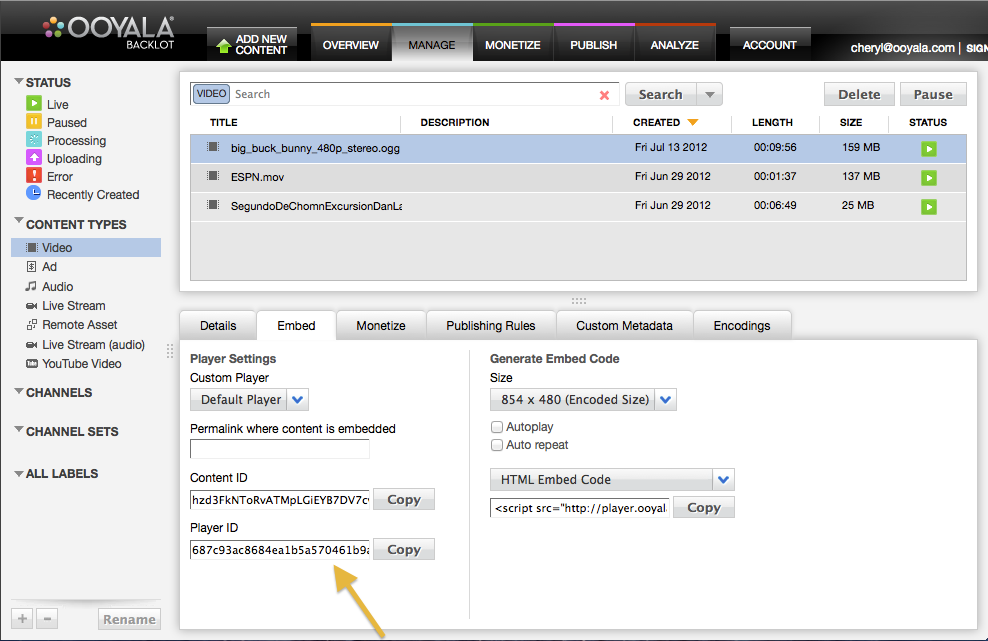

Use this tutorial to get started using the HTML5 Player V3.
This tutorial helps you begin working with the Ooyala HTML5 Player V3. You will code an HTML page and add tags containing the logic required to customize, manage, and use the Ooyala player.
See Complete Basic Example to view the code for the entire web page.
<!DOCTYPE html>
<html>
<head>
<title>My Test Player V3 Web Page </title>
</head>
<body>
My Player V3 Content.
</body>
</html>
To get started, you will need a Player ID. The Player ID is an alphanumeric string that uniquely identifies a specific player you will use in your web page. As shown in the following screenshot, you get this Player Id from the Backlot → Manage → Embed tab.

Within the head tag, create a <script> tag with a src attribute that makes the request to load the player. Replace player_id with the Player ID you retrieved from the Backlot → Manage → Embed tab:
<head>
<!-- Load Ooyala Player -->
<script src='http://player.ooyala.com/v3/player_id'></script>
</head>
You may also specify any third party or custom modules that you would like to load by including additional <script> tags, each having a src attribute specifying a path to a custom module:
<head> <!-- Load Ooyala Player --> <script src='http://player.ooyala.com/v3/player_id'></script> <!-- Load additional custom modules --> <script src='/custom_module_name.js'></script> </head>
The first thing you will do is specify the presentation layout for the player using a named <div> element. By default, the player's UI will occupy the entire space provided by the container <div> tags, which you must use to create a container for the player. This allows you to control the position of the player on the screen, and enables the player to adapt to dynamic changes in the site layout.
Begin by creating a <div> element that will display the player UI and video screen. The <div> element will need a unique DOM ID, which you specify in its id attribute (playerwrapper in this example). You will use this div id later to reference the loaded player.
<body> My Player V3 Content <!-- The DIV elements specify the layout for the content elements. --> <div id='playerwrapper' style='width:480px;height:360px;'></div> </body>
Include a <script> tag below the <div> element where you specified the container for the player. Within this <script> tag, you will create the player, associate a video and related assets with the player, and include any embedded parameters (you will learn more about this later). Initially, you need to manually create your video embed code for the player. In the following example, we create a video player and place it in the <div> container identified by the div id playerwrapper.
Wrap the call to OO.Player.create() within the OO.ready() method to ensure the script is initialized and loaded.
<script>
// Surround everything with OO.ready to make sure the script has
// loaded and initialized.
OO.ready(function() {
window.player = OO.Player.create(
'playerwrapper',
'hkbTd2czrIYRs4-HnJ9nVcHSxtA07FUK', {
// add the embedded player parameters here
autoplay: true
height: 100%
width: 100%
}
);
});
</script>
<!DOCTYPE html>
<html>
<head>
<title>My Test Player V3 Web Page </title>
<!-- Load Ooyala Player -->
<script src='http://player.ooyala.com/v3/e18ab1da1813483499554ea2d8e67fbd'></script>
<!-- Load additional custom modules -->
<!-- script src='custom_module_name.js'></script> -->
</head>
<body>
My Player V3 Content
<!-- The DIV elements specify the layout for the content elements. -->
<div id='playerwrapper' style='width:480px;height:360px;'></div>
<script>
// Surround everything with OO.ready to make sure the script has
// loaded and initialized.
OO.ready(function() {
window.player = OO.Player.create(
'playerwrapper',
'hkbTd2czrIYRs4-HnJ9nVcHSxtA07FUK', {
// add the embedded player parameters here
autoplay: true
height: 100%
width: 100%
}
);
});
</script>
</body>
</html>